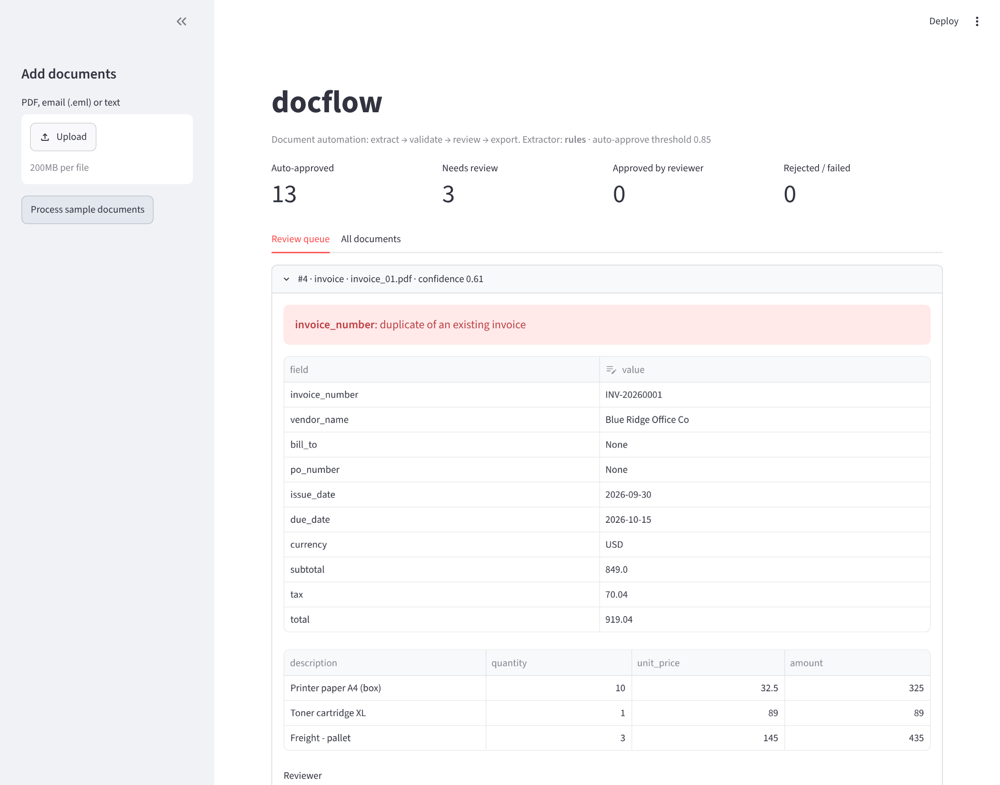

From inbox to clean data.
Clean documents go straight through; the rest reach a person with the reason.
Invoices, receipts and contracts turned into clean, validated data, with a human in the loop for the ones that need a second look.
2026
Extract. Validate. Route.Accounts payable teams still re-type invoices from PDFs and email attachments. DocFlow reads the document, extracts typed fields and checks that the numbers add up. Then it approves the document for export, or routes it to a reviewer with the exact problem highlighted.
How it works
Clean documents go straight through; the rest reach a person with the reason.
01
PDFs, emails and images
02
Typed fields as validated JSON
03
Totals, dates, vendors and duplicates
04
Clean ones approved, the rest reviewed
05
CSV, Google Sheets or a webhook
Every document is extracted, validated, and either approved or explained.
The LLM must return valid Invoice, Receipt or ContractTerms JSON; a rules extractor runs offline.
01
Line items to subtotal, subtotal plus tax to total, due date after issue date, positive totals.
02
Matches regardless of case and spacing; a duplicate can't be approved while the original is.
03
Reviewers edit fields, and the document is validated again before approval.
04
Drop in an .eml file and its PDF and image attachments are read.
05
CSV, Google Sheets or a webhook for Zapier, Make, n8n or your ERP, with spreadsheet formulas neutralised.
06
Results
Measured on 15 synthetic sample documents. The rules extractor was written for their layouts, so this shows the pipeline works, not accuracy on real vendor documents.
field, routing and document-type accuracy of the offline rules extractor on the samples.
the default confidence needed for auto-approval; any error sends a document to review.
extraction, email attachments, validation, duplicates, re-validation on approval, safe export, CLI and API.

Wherever documents arrive as PDFs and need to leave as rows.
Invoices out of email and into your ERP.
For finance teams
01
Merchant, date, payment method and totals.
For expense audits
02
Renewal, notice period, governing law and liability cap.
For legal operations
03
Flagged before anyone pays twice.
For controllers
04
Unknown vendors always go to review.
For procurement
05
One webhook to Zapier, Make or n8n.
For operations
06
Free under the MIT license. Runs offline with the rules extractor; add an Anthropic or OpenAI key for the LLM.
Clone
git clone https://github.com/faizanreza-cs/docflow-agent && cd docflow-agentInstall, then make the samples
make setup
make samplesRun the pipeline
docflow run samples/docs --extractor rules --export out/invoices.csvI build document automation and AI agents like this one for finance and operations teams.
Open to freelance projects and full-time roles.
No. A rules extractor runs offline. With an Anthropic or OpenAI key, an LLM extracts the fields with structured outputs, which is what varied vendor layouts need.
That has to be measured: 100% on the samples shows the pipeline works, not real-world accuracy. Add your documents and truth files and run make eval-llm.
The document is marked failed and kept for review. A bad file never crashes a batch.
No. Edited fields are validated again before approval, and every decision is stored with the reviewer and a timestamp.
I can set DocFlow up on your documents and connect it to the systems you already use.